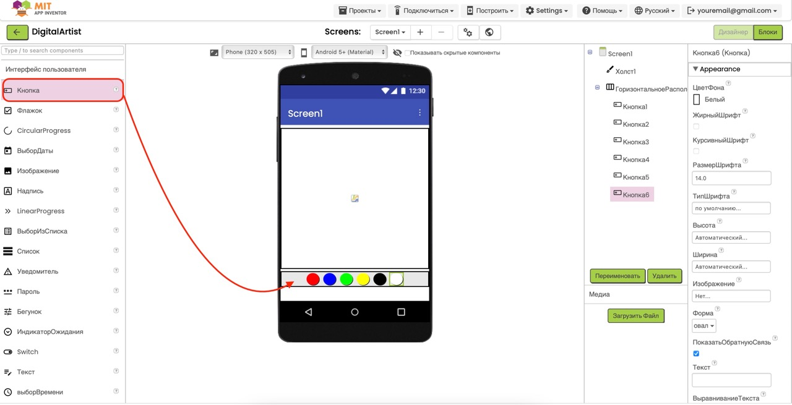
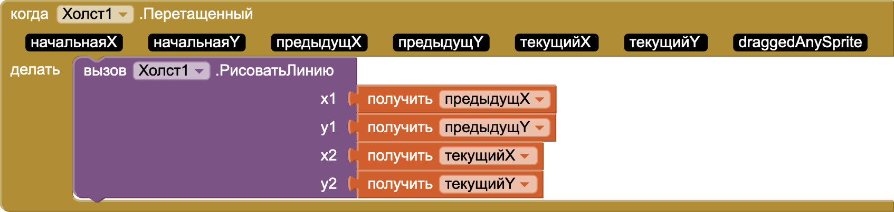
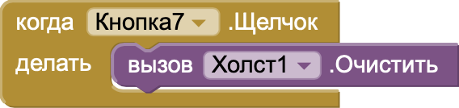

Проект "Цифровой художник"
Цель: Создать приложение, которое превращает экран телефона в холст для рисования! Касайся экрана и создавай яркие рисунки пальцем.
Этот проект поможет изучить работу с компонентом Canvas (холст) для рисования, отслеживать касания пальцем и менять цвета линий.
Чему ты научишься:
- Использовать Canvas (холст) для рисования
- Отслеживать касания пальцем
- Менять цвета и размер линий
1
Добавь холст для рисования
2
Создай кнопки для выбора цветов
3
Запрограммируй рисование
4
Добавь кнопку очистки
5
Тестируй приложение
Шаг 1: Добавление холста для рисования
- Откройте MIT App Inventor и создайте новый проект с названием "DigitalArtist".
- В левой части экрана найдите раздел Drawing and Animation (Рисование и анимация).
- Перетащите компонент Canvas (Холст) на экран вашего приложения. Этот компонент будет использоваться как поверхность для рисования.
-
Выберите добавленный холст (Canvas1) и настройте его свойства в
правой панели:
• Width (Ширина): Fill parent (Заполнить родителя)
• Height (Высота): 300 или больше (чтобы занять большую часть экрана)
• BackgroundColor (Цвет фона): White (Белый)
• PaintColor (Цвет рисования): Black (Чёрный) - начальный цвет
• LineWidth (Ширина линии): 3 - хорошая стартовая толщина

Совет: Чем больше размер холста, тем больше места
для творчества! Но оставьте немного места для кнопок выбора цвета
и очистки холста.
Шаг 2: Создание кнопок для выбора цветов
- Теперь создадим панель с кнопками для выбора разных цветов. Из палитры Layout (Расположение) перетащите компонент HorizontalArrangement (Горизонтальное расположение) под холст.
-
Настройте свойства HorizontalArrangement1:
• Width (Ширина): Fill parent (Заполнить родителя)
• AlignHorizontal (Выравнивание по горизонтали): Center (По центру) - Из палитры User Interface (Интерфейс пользователя) перетащите несколько кнопок Button внутрь HorizontalArrangement1. Добавьте по одной кнопке для каждого цвета (например, красный, синий, зелёный, жёлтый, чёрный). 
-
Настройте свойства каждой кнопки:
• Text (Текст): Оставьте пустым или напишите название цвета
• BackgroundColor (Цвет фона): Выберите соответствующий цвет (красный для кнопки красного и т.д.)
• Shape (Форма): Выберите oval (овал) для создания круглых кнопок
• Width (Ширина): 40 пикселей
• Height (Высота): 40 пикселей
Совет: Используйте яркие, контрастные цвета для
кнопок. Добавьте белый цвет для "стирания" (рисование белым по
белому фону).
Шаг 3: Программирование рисования
- Теперь перейдём к программированию логики рисования. Переключитесь на вкладку Blocks (Блоки) в правом верхнем углу экрана.
- Сначала запрограммируем рисование на холсте. В левой панели найдите Canvas1 и нажмите на него. Из списка доступных блоков выберите when Canvas1.Dragged (когда проводим пальцем по холсту).
- Этот блок срабатывает, когда пользователь проводит пальцем по холсту. Внутри этого блока мы добавим команду для рисования линии.
- Снова найдите Canvas1 в левой панели и выберите call Canvas1.DrawLine (нарисовать линию). Поместите этот блок внутрь блока Canvas1.Dragged.
-
Блок DrawLine требует четыре параметра - начальные и конечные
координаты линии (x1, y1, x2, y2).
• Для x1 и y1 используйте переменные prevX и prevY из блока Canvas1.Dragged
• Для x2 и y2 используйте переменные currentX и currentY из блока Canvas1.Dragged

-
Теперь запрограммируем кнопки выбора цвета. Для каждой кнопки
создайте блок обработки нажатия. Например, для красной кнопки:
1. Найдите RedButton (или как вы назвали кнопку) в левой панели
2. Выберите блок when RedButton.Click
3. Добавьте блок set Canvas1.PaintColor to
4. Выберите красный цвет в качестве значения - Повторите эти действия для всех кнопок цветов, выбирая соответствующий цвет для каждой.

Важно: В блоке Canvas1.Dragged используются
переменные prevX, prevY, currentX и currentY для определения
начала и конца линии. Это позволяет рисовать плавные линии, следуя
за движением пальца.
Шаг 4: Добавление кнопки очистки
- Вернитесь на вкладку Designer для добавления кнопки очистки холста.
- Из палитры User Interface перетащите еще одну кнопку Button под панель с цветами или рядом с ней.
-
Настройте свойства кнопки очистки:
• Text (Текст): "Очистить" или "Clear"
• FontSize (Размер шрифта): 18
• Width (Ширина): Fill parent (Заполнить родителя) или конкретное значение в пикселях
• BackgroundColor (Цвет фона): Серый или другой нейтральный цвет - Вернитесь на вкладку Blocks для программирования кнопки очистки.
- Найдите вашу кнопку очистки (ClearButton) в левой панели и выберите блок when ClearButton.Click.
- Найдите Canvas1 и выберите блок call Canvas1.Clear (очистить холст). Поместите этот блок внутрь блока ClearButton.Click. 
Улучшение: Можно добавить кнопку для изменения
толщины линии. Для этого добавьте еще несколько кнопок и в
обработчиках нажатия используйте блок
set Canvas1.LineWidth to с разными значениями
(например, 1, 3, 5, 10).
Шаг 5: Тестирование приложения
-
Протестируйте ваше приложение:
Чтобы увидеть ваш цифровой художник в действии, воспользуйтесь руководством по тестированию приложений в нашем введении в MIT App Inventor. -
Проверьте основные функции:
• Рисование линий на холсте при перемещении пальца
• Смена цвета рисования при нажатии на кнопки цветов
• Очистка холста при нажатии кнопки "Очистить" -
Возможные улучшения приложения:
• Добавьте кнопку сохранения рисунка в галерею телефона
• Добавьте ползунок для изменения толщины линии
• Добавьте кнопки для рисования готовых фигур (круг, квадрат)
• Добавьте функцию выбора произвольного цвета из палитры
• Реализуйте заливку замкнутых областей

Поздравляем! Вы создали приложение "Цифровой
художник"! Теперь вы знаете, как использовать Canvas для
рисования, обрабатывать события касания экрана и создавать
интерактивный пользовательский интерфейс.
Дополнительная идея: Попробуйте добавить другие
инструменты рисования, например, распылитель (рисует точки) или
инструмент для создания градиентных линий, которые меняют цвет во
время рисования.
Скачать проект
Если у вас возникли сложности, вы можете скачать готовый файл проекта в нашем центре загрузок:
Перейти в центр загрузок